CONSTRUCTION SPECIFICATIONS
- Path
- Descriptions > 10 ENGINE > 1056 PETROL INJECTION SYSTEM > CONSTRUCTION SPECIFICATIONS
- Kind
- system description
- Applies to
- engines: 2.0 16V; all production periods
- Interactive page
- https://sloeber94.github.io/elrnDB-fDct/en/#/244000400
Applies to: engines: 2.0 16V; all production periods
INJECTION - IGNITION SYSTEM OPERATING DIAGRAM
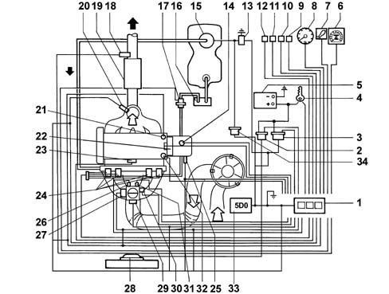
DIAGRAM SHOWING INFORMATION ENTERING/LEAVING THE CONTROL UNIT
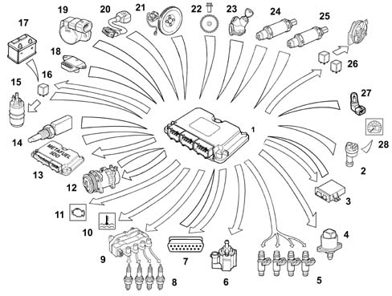
MAIN MANAGEMENT STRATEGIES
Operating principle
Signal framework mangement
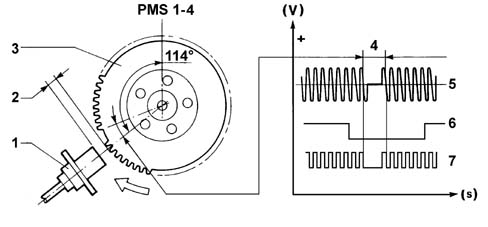
Management of the injection
Calculating basic injection time
Cold start-up and running
Full load
Acceleration and deceleration
Cut off
Rotation speed limiter
Fuel pump drive
Injector control
Altitude correction
Management of the ignition
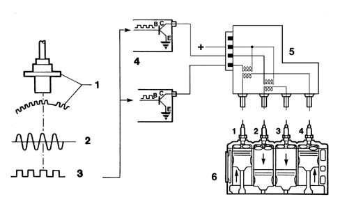
Start-up
High temperatures
Cut off
Take-off
Engine idling
Knock control
Engine idle speed control management
Starting.
Engine running and accelerator pedal released.
Normal motion.
Over-run.
EMISSION CONTROL DEVICE MANAGEMENT
Active charcoal filter scrubbing solenoid
Lambda sensor heater
Self-adaptation
Radiator fan management
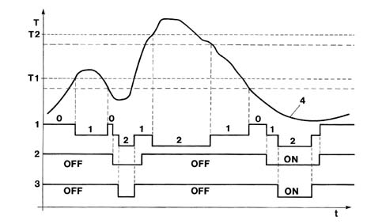
DIAGNOSTICS
Eobd
Warning light bulb
Active diagnostics
Recovery strategy
List of functions that can be tested
Definition | Minor fault | Serious fault | Recovery functions |
|---|---|---|---|
engine management control unit | X | --- | --- |
battery voltage | X | --- | X |
coolant temperature sensor | X | --- | X |
air temperature sensor; | X | --- | X |
absolute pressure sensor | X | --- | X |
throttle position sensor | X | --- | X |
injection timing sensor | X | --- | --- |
engine speed sensor | X | --- | X |
knock sensor | X | --- | X |
upstream lambda sensor | X | --- | X |
downstream lambda sensor | X | --- | --- |
vehicle speed sensor | X | --- | X |
radiator fans | X | --- | --- |
sensor power supply | X | --- | X |
ignition coil control (both) | X | --- | X |
injector control | X | --- | --- |
engine idle speed adjustment actuator control | X | --- | --- |
carbon filter scrubbing solenoid control | X | --- | --- |
upstream lambda sensor heating control | X | --- | --- |
downstream lambda sensor heating control | X | --- | --- |
Mixture concentration self-adaption | X | --- | --- |
coolant temperature warning light bulb control (BSI) | X | --- | --- |
coolant temperature temperature gauge control (BSI) | X | --- | --- |
radiator cooling fan 1 control relay control | X | --- | --- |
radiator cooling fan 2 control relay control | X | --- | --- |
engine speed information (BSI) | X | --- | --- |
system failure bulb control | X | --- | --- |
system failure line control | X | --- | --- |
climate control system compressor information | X | -- | --- |
automatic transmission communication (CAN line) (if present) | X | --- | --- |
mixture concentration information | X | --- | --- |
coded immobiliser communication | X | --- | --- |
coded immobiliser code store | X | --- | --- |
catalytic converter ageing information | X | --- | --- |
exhaust gas recirculation system information | X | --- | |
evaporation control system information | X | --- | |
fuel injection system information | X | --- | |
mixture concentration information | X | --- | |
misfiring | --- | X | --- |
automatic transmission communication (CAN line) (if present) | X | X | --- |
ELECTRIC - ELECTRONIC CIRCUIT
Engine management control unit
Functions managed by the control unit
Control unit pin out
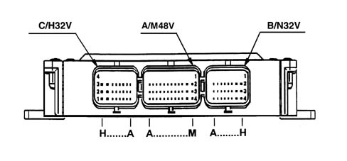
Injection-ignition system wiring diagram
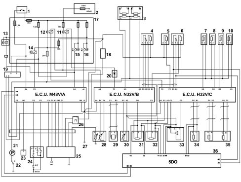
Fuel supply manifold
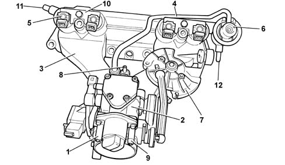
Petrol injectors
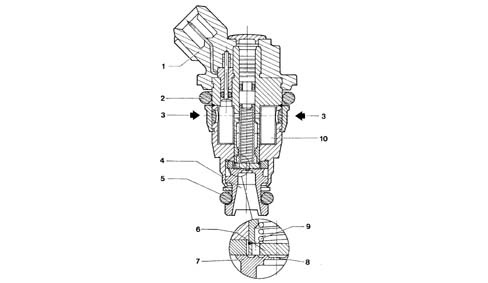
Fuel pressure regulator
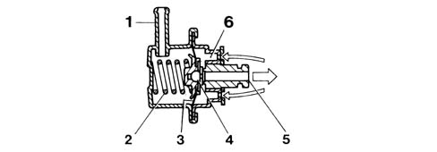
Engine speed sensor
Operating principle
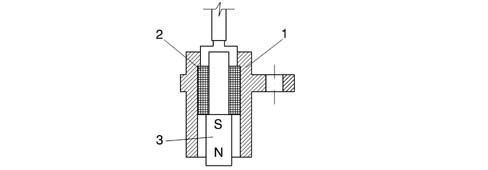
Throttle position sensor
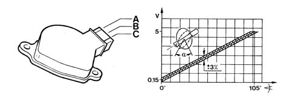
Absolute pressure sensor
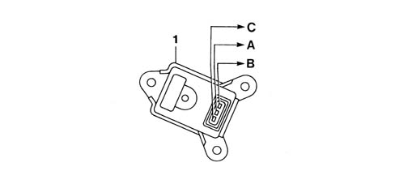
Engine timing sensor
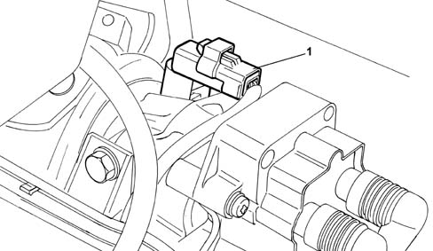
Vehicle speed sensor
Operating principle
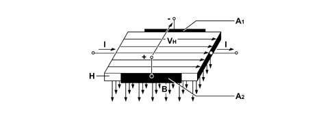
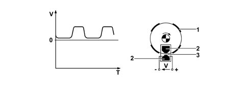
Air temperature sensor
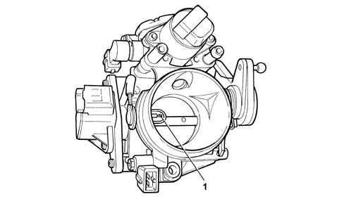
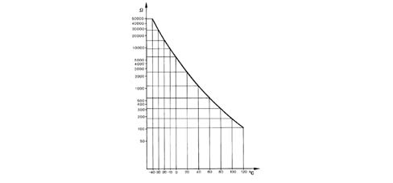
Engine coolant temperature sensor
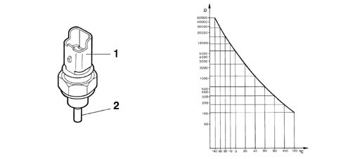
Knock sensor
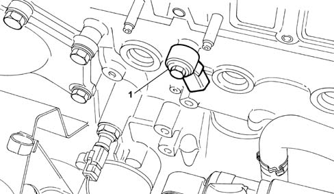
Ignition Coils
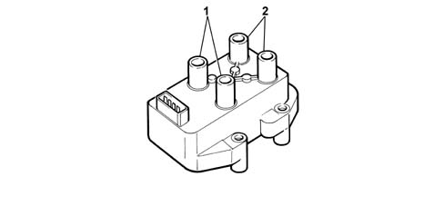
Throttle body
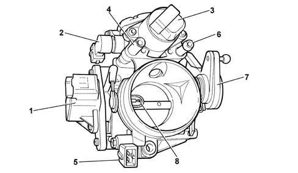
Throttle body heater
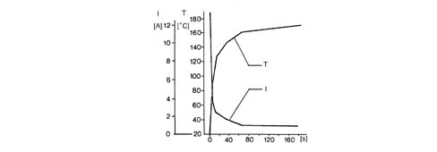
Engine idle speed actuator
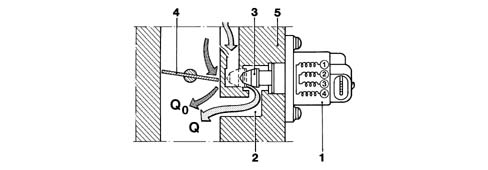
Applies to: engines: 2.0 16V; all production periods; only with equipment: Methane and GPL
Starting.
Engine running and accelerator pedal released.
Normal motion.
Over-run.
EMISSION CONTROL DEVICE MANAGEMENT
Active charcoal filter scrubbing solenoid
Lambda sensor heater
Self-adaptation
Radiator fan management
DIAGNOSTICS
Eobd
Warning light bulb
Active diagnostics
Recovery strategy
List of functions that can be tested
Definition | Minor fault | Serious fault | Recovery functions |
|---|---|---|---|
engine management control unit | X | --- | --- |
battery voltage | X | --- | X |
coolant temperature sensor | X | --- | X |
air temperature sensor | X | --- | X |
absolute pressure sensor | X | --- | X |
throttle position sensor | X | --- | X |
injection timing sensor | X | --- | --- |
engine speed sensor | X | --- | X |
knock sensor | X | --- | X |
upstream lambda sensor | X | --- | X |
downstream lambda sensor | X | --- | --- |
vehicle speed sensor | X | --- | X |
radiator fans | X | --- | --- |
sensor power supply | X | --- | X |
ignition coil control (both) | X | --- | X |
injector control | X | --- | --- |
engine idle speed adjustment actuator control | X | --- | --- |
carbon filter scrubbing solenoid control | X | --- | --- |
upstream lambda sensor heating control | X | --- | --- |
downstream lambda sensor heating control | X | --- | --- |
Mixture concentration self-adaption | X | --- | --- |
coolant temperature warning light bulb control (BSI) | X | --- | --- |
coolant temperature temperature gauge control (BSI) | X | --- | --- |
radiator cooling fan 1 control relay control | X | --- | --- |
radiator cooling fan 2 control relay control | X | --- | --- |
engine speed information (BSI) | X | --- | --- |
system failure bulb control | X | --- | --- |
system failure line control | X | --- | --- |
climate control system compressor information | X | -- | --- |
automatic transmission communication (CAN line) (if present) | X | --- | --- |
mixture concentration information | X | --- | --- |
coded immobiliser communication | X | --- | --- |
coded immobiliser code store | X | --- | --- |
catalytic converter ageing information | X | --- | --- |
exhaust gas recirculation system information | X | --- | |
evaporation control system information | X | --- | |
fuel injection system information | X | --- | |
mixture concentration information | X | --- | |
misfiring | --- | X | --- |
automatic transmission communication (CAN line) (if present) | X | X | --- |